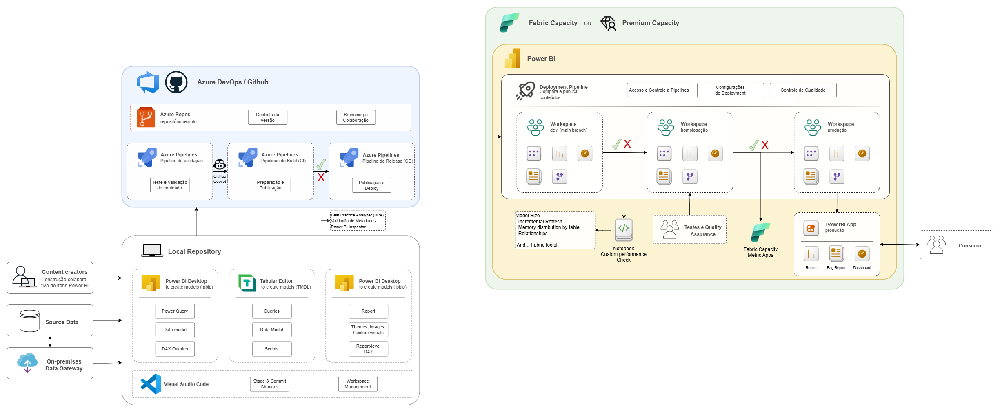

Sem padronização
Sem um padrão comum, cada pessoa modela, nomeia e organiza do seu jeito. O resultado são relatórios inconsistentes, difíceis de manter e de entender por quem não os criou.
Boas práticas viram opcionais, não regra.
Padronização · Qualidade · Versionamento · Pipeline-as-Code
Adicione CI/CD e versionamento ao seu processo de criação de itens de Power BI, com validação de qualidade e performance antes e após cada publicação. Habilite colaboração e boas práticas customizadas para a sua empresa, tudo de forma automática.

Fluxo simplificado da esteira
Sem automação, problemas de modelagem, de relatório e de reuso só aparecem tarde, muitas vezes em produção. Esta solução ataca esse problema tardio: antes mesmo de publicar, o conteúdo passa por controles de qualidade e padronização; depois da publicação, entram as validações de qualidade e performance com dados reais.
Sem um padrão comum, cada pessoa modela, nomeia e organiza do seu jeito. O resultado são relatórios inconsistentes, difíceis de manter e de entender por quem não os criou.
Boas práticas viram opcionais, não regra.
Nada impede subir um modelo problemático, que muitas vezes acaba impactando sua capacidade como um todo, afetando outros relatórios e dashboards importantes.
Falta um gate que bloqueie o que não deve passar.
Sem versionamento e trabalho em equipe, modelos e datasets acabam duplicados e desconectados. Isso multiplica conexões no gateway, aumenta o custo e gera retrabalho constante.
O que já existe raramente é reaproveitado.
Erros de DAX, colunas mal configuradas e visuais fora do padrão passam despercebidos até chegarem ao usuário final. Quanto mais tarde o problema aparece, mais caro fica corrigir.
Sem validação antecipada, a produção vira o ambiente de testes.
A validação acontece em dois momentos com objetivos diferentes. A etapa estática roda no GitHub via GitHub Actions, antes do merge com a branch principal; a etapa dinâmica roda no Fabric, com dados reais, simulando acessos simultâneos, performance, uso de memória etc. Tudo é definido em YAML: regras, gates e severidades são totalmente configuráveis conforme a necessidade da sua empresa.
Roda no Pull Request via GitHub Actions · runners efêmeros · sem Fabric
Exemplo de validações já construídas (customizáveis: adicione ou remova conforme a necessidade)
Roda pós-deploy no Fabric · modelo publicado com refresh automático e validações de performance
Exemplo de validações já construídas (customizáveis: adicione ou remova conforme a necessidade)
O desenvolvimento continua no Power BI Desktop, com a mesma experiência de sempre, agora integrado ao Git: versionamento, histórico e colaboração em cada mudança. Ao abrir o PR, o GitHub roda a Etapa 1 (estática); aprovado e mergeado, a integração nativa do Fabric com o Git entrega o conteúdo ao workspace. Você escolhe qual branch vincular ao Fabric, com sincronização bidirecional (mudanças no Git refletem no Fabric e vice-versa), onde entra a Etapa 2 (dinâmica) até produção.
 BPA
i
BPA
i
Fabric Toolbox e outras ferramentas.💡 Passe o mouse sobre o i de cada etapa para ver o que ela faz.
Com reports, modelos e dashboards versionados no Git, vários times e pessoas colaboram no mesmo repositório, em paralelo. Logo no início da validação estática, um job de descoberta faz o diff do PR contra a base e seleciona apenas os projetos PBIP alterados, então a esteira foca só no que mudou. Inteligência e colaboração, sem travar o time.
Exemplo de repositório no Git com mais de um Power BI Project (.pbip)
reports, modelos e dashboards versionados no Git; vários times trabalham em paralelo no mesmo repositório.
no início da validação estática, um job compara o PR com a base e seleciona só os .pbip alterados.
no PR, valida apenas os projetos alterados; workflow_dispatch revalida todos sob demanda.
projeto novo entra no repositório e é descoberto automaticamente, sem ajustes na esteira.
Cada validação, estática ou dinâmica, tem um critério de aprovação definido pela sua empresa. Você atribui uma severidade (nota) a cada regra, inclusive às que o seu time criar, e decide o que apenas avisa e o que reprova a mudança. Assim, cada retorno orienta o usuário a seguir ou corrigir antes de publicar.
Exemplo: severidade das regras de BPA
Reprova o build e bloqueia o merge.
bpa-failedPassa, mas alerta no comentário.
bpa-warningSugestão de boa prática.
bpa-passedDeploy bloqueado: 1 issue Severity 3 encontrado.
Measure 'Margin %'Measure 'Revenue'Table 'Sales'A integração é nativa entre o Git e o Fabric. Você vincula a branch ao workspace com sincronização bidirecional: mudanças no Git chegam ao Fabric e ajustes feitos no Fabric voltam ao Git, sem exportar ou importar nada à mão. Depois do deploy entra a Etapa 2 (dinâmica) e o Fabric Capacity Metrics App acompanha o consumo da capacity de forma contínua.
Vincule a branch ao workspace: mudanças no Git refletem no Fabric e ajustes no Fabric voltam ao Git. A integração entrega a definição do item; um refresh materializa os dados.
Promova o conteúdo entre workspaces (Dev → Prod) com aprovação humana, mantendo governança e rastreabilidade até produção.
Fabric Capacity Metrics App: acompanhe consumo de CU, throttling e picos da capacity para manter performance e custo sob controle.